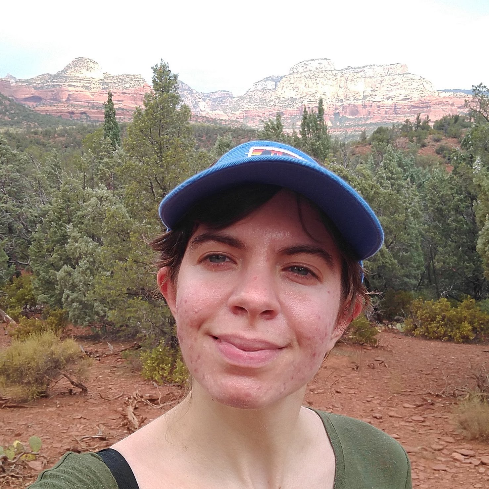

<table>
  <tr>
    <td width="35%">
      <div>
        
      </div>
    </td>
    <td>
      <div id="info">
	<p>This is the personal webpage and blog of Evangelie Zachos. She completed her PhD in inverse problems (in pure mathematics) in June, 2020. During her time at Stanford, she completed multiple classes in statistics, machine learning, and causal inference.</p>

	<p>From June until mid-September, she worked at Cisco as a software engineering intern in the San Jose Innovation Lab. The team of 6 people was working on a project involving studying wifi latency, and she used matlab to debug and analyze wifi packets collected using software defined radios. She used python to create visualizations for this data, and in the final weeks of her internship she created and tuned a tensor flow neural network to imitate the output of the matlab decoding code.</p>

    <p>Starting in December of 2020, she began work as a junior DSP and AI Scientist at Rajant, a company specializing in mesh radio networks but which is also pursuing new areas.  </p>

	<p>This webpage doesn't have photos or a lot of information, but look for additional updates to come! </p>
      </div><!-- /.info -->
    </td>
  </tr>
</table>

  
